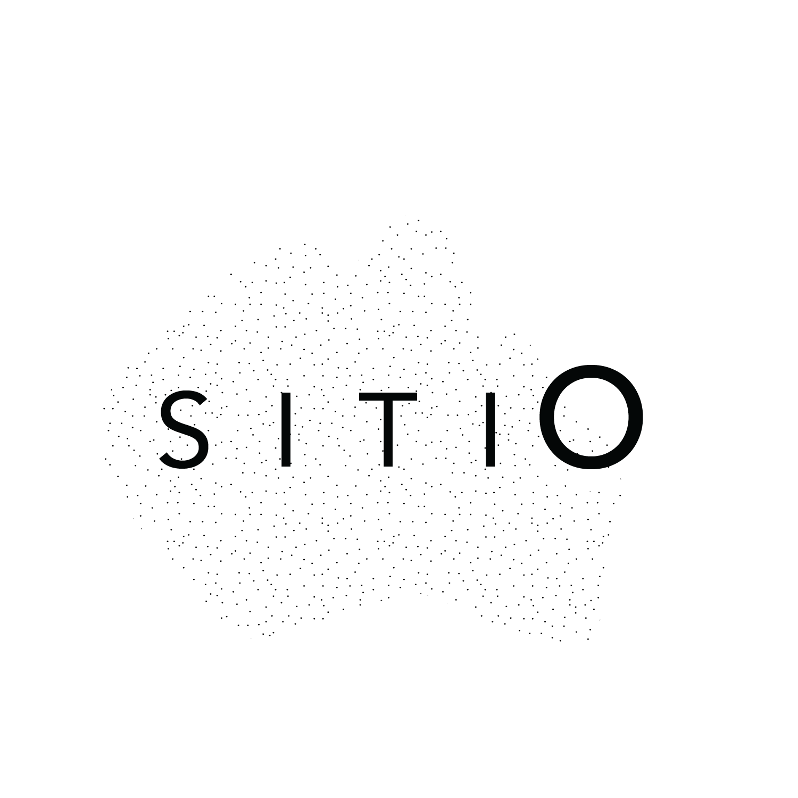

SITIO is a collaborative artist/residency space and experimental research center in Rio Piedras, Puerto Rico. As part of SITIO, I have organized and conducted educational/work experiences that can also have a community impact using critical thinking and creative research methodologies. Through SITIO I worked on a project with a group of architecture students from the University of Puerto Rico where they used renovation practices in their home town of San Sebastian del Pepino, Puerto Rico, as well as on a course on property restoration in Greece.
I have also organized a series of short residencies for emerging artists including Justin Rui Han (2019), Eva Rodríguez Langevin (2020), and Emmanuel Navarro Pizarro (2026). Each residency has concluded with a community gathering around a home cooked meal and a small exhibition of the work completed during the residency period.